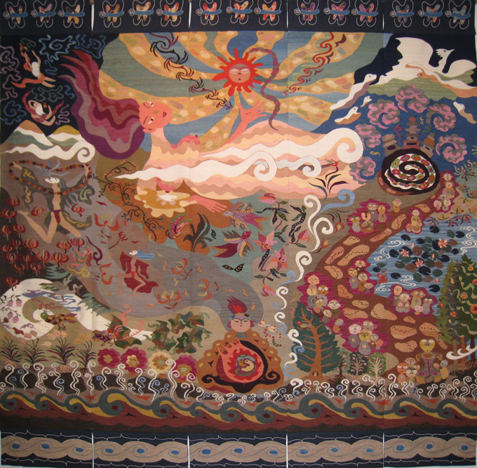

|  |
| 【生命の夜明け・法曽】 |
前作「生命のまほろば・法曽」から２年。
今回もこの法曽の自然と生きものと歴史を、大地から湧いてくる彩り豊かな生命の風景として、織物の中に表現
いたしました。
三尾崎山の上から見える夜明け前の雲海。
その白い大海原から現れる曙光は、しんとした森に新たな一日の始まりを告げる。
小鳥たちがさえずり、葉っぱの下の虫たちが蠢き、涼やかな風が木々の枝先に軽く触れていく。
太陽を産んだばかりの大地の女神は、誇らしげに、愛しげに微笑んでいる。
大いなる森の深い懐に抱かれて、沢山の生命が生まれ、又死んでいく永遠の連なり。
山あいの豊かな自然溢れる図柄の中には、遠い昔の法曽焼の白龍さんや、野辺の地蔵さまや、法曽窯の窯焚きなど
も織り込んでいます。
羊の原毛を手紡ぎし、植物を主に煮出して染めた５０色以上の糸を使って、１年以上かけて織り上げました。
草木染めの微妙な色合いが混ざり合って、作品の図柄に優しい眼差しを注いでくれたようです。
どうぞご観覧ください。
| 使用した主な植物 |
|---|
|
藍(あい) 玉ネギ アカネ クルミ フキ クズ マリーゴールド 月見草 紅茶 モッコク キウイフルーツ 桜 五倍子 ヘマチン ノブドウ セージ クワの葉 キク シソヨウシュヤマゴボウ トウモロコシ セイダカアワダチソウ ヤシャブシ ブドウの皮など |